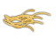

YOUR MAGIC WORLD
play now
YOUR MAGIC WORLD
play now


 alfaversion
Game guide
Help
alfaversion
Game guide
Help
У місії «Ферма» завдання гравця здати 8 відер молока. Для цього потрібно скопати, засіяти, виростити траву, а потім її скосити. Спеціальні знаряддя допоможуть виконати це завдання.
– клікнувши на неї і перейшовши на поле, гравець зможе скопати ту частинку, на якій стоїть.
– клікнувши на неї і перейшовши на скопане поле, гравець зможе посіяти траву.
– клікнувши на неї і перейшовши на посіяне поле, гравець зможе полити паростки трави.
– клікнувши на неї і перейшовши на поле з политою травою, гравець зможе скосити траву.
 - клікнувши на нього, воно опиниться у руках гравця і сіно можна буде віднести корові.
– кліком може гравець взяти його в руки і скерувати на чоблеса, який краде у землян сіно.
– клікнувши на нього, воно опиниться в руках і віднести до конвеєра. Якщо корова вже достатньо з’їла сіна, то воно наповниться молоком і поїде до віконечка прийому, а якщо – ні, то відро просто проїде конвеєром.